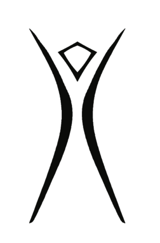

Principles of Elsewhere
Our principles aren't rules imposed from above. They're commitments we hold together. They come from years of building a temporary city in the desert and are inspired by the original Burning Man principles.

Elsewhere is an official regional event recognized by Burning Man Project in alignment with Burning Man's 10 guiding principles and official event criteria.
Radical Inclusion
Anyone may be a part of Burning Man. We welcome and respect the stranger. No prerequisites exist for participation in our community.
Decommodification
In order to preserve the spirit of gifting, our community seeks to create social environments that are unmediated by commercial sponsorships, transactions, or advertising. We stand ready to protect our culture from such exploitation. We resist the substitution of consumption for participatory experience.
Gifting
Burning Man is devoted to acts of gift giving. The value of a gift is unconditional. Gifting does not contemplate a return or an exchange for something of equal value.
Radical Self-reliance
Burning Man encourages the individual to discover, exercise and rely on their inner resources.
Communal Effort
Our community values creative cooperation and collaboration. We strive to produce, promote and protect social networks, public spaces, works of art, and methods of communication that support such interaction.
Radical Self-expression
Radical self-expression arises from the unique gifts of the individual. No one other than the individual or a collaborating group can determine its content. It is offered as a gift to others. In this spirit, the giver should respect the rights and liberties of the recipient.
Civic Responsibility
We value civil society. Community members who organize events should assume responsibility for public welfare and endeavor to communicate civic responsibilities to participants. They must also assume responsibility for conducting events in accordance with local, state and federal laws.
Leaving No Trace
Our community respects the environment. We are committed to leaving no physical trace of our activities wherever we gather. We clean up after ourselves and endeavor, whenever possible, to leave such places in a better state than when we found them.
Participation
Our community is committed to a radically participatory ethic. We believe that transformative change, whether in the individual or in society, can occur only through the medium of deeply personal participation. We achieve being through doing. Everyone is invited to work. Everyone is invited to play. We make the world real through actions that open the heart.
Immediacy
Immediate experience is, in many ways, the most important touchstone of value in our culture. We seek to overcome barriers that stand between us and a recognition of our inner selves, the reality of those around us, participation in society, and contact with a natural world exceeding human powers. No idea can substitute for this experience.